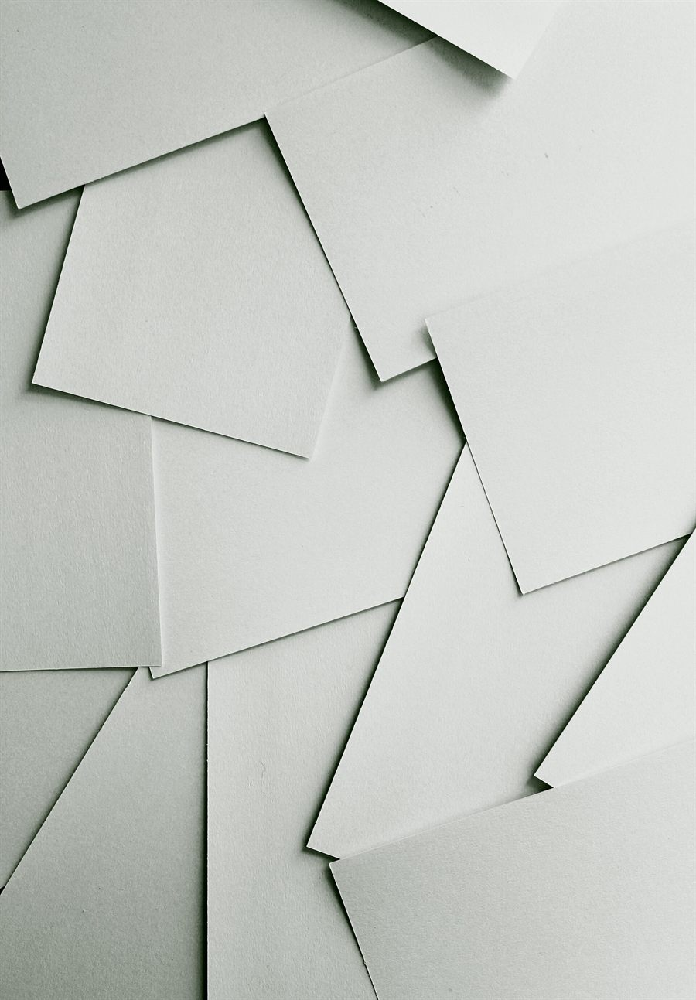

фотогалерея 12 кадров
Смотреть
на бумагу.
Бумага, краска, машины и руки. Полиграфия — это физика, которую хочется рассмотреть поближе.
демо-кадры
Wikimedia Commons
не съёмка компании

Об фотографиях: авторы и лицензии
- Andre Robillard — Modern printing press, CC0
- Brandi Redd — Scattered white paper, CC0
- m0851 — Designer style magazines, CC0
- Julo — Yellow & Magenta coldset offset inks, общественное достояние
- David Peters — Watermark Press, CC BY-SA 3.0
- Oregon Department of Transportation — Paper rolls, CC BY 2.0
- Ian Alexander — Printing demo, CC BY-SA 4.0
- Smirkybec — Letterpress drawers, CC BY-SA 4.0
- Aatu Dorochenko — Offset printing press, CC BY-SA 4.0
- Willi Heidelbach — Metal movable type, CC BY 2.5
- Subhashish Panigrahi — Offset printers, CC BY-SA 4.0
- Romain Salomon — Offset press 4 color, CC BY-SA 4.0
- SimonK — American boxes palletised, CC BY-SA 4.0
- Coylegenec — Digital printing press, CC BY-SA 3.0
- Dinkun Chen — Canon imagePROGRAF large format printer, CC BY-SA 4.0
Демонстрационные кадры с Wikimedia Commons показывают процессы и материалы, но не являются съёмкой компании «Бриз». Для публикации сайта компании их стоит заменить собственной съёмкой цеха. Изображения масштабированы; производные распространяются по тем же лицензиям.
хотите вживую?